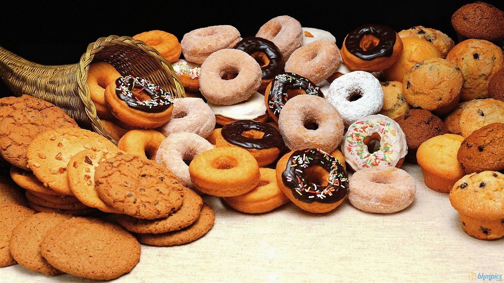

NYC Bakery Recipes
We know that coming to the bakery is a lot of work so we organized the best recipes for you to try at home when it is too much work to leave the house. personally we think baking is a lot more work than coming to our bakery, but to each their own.
- Cinnamon Rolls
- Glazed Donuts
- Jelly Donuts
- Apple Pie
- Chocolate Chip Cookies
- Blueberry Muffins
- Reasons for Cooking at Home
- You don't have to leave the house
- It's fun if you like to bake
- You can learn how to bake if you don't know
- Reasons for coming to our bakery
- You don't have to bake
- It will taste better
- We gurantee it will be cooked properly

Home